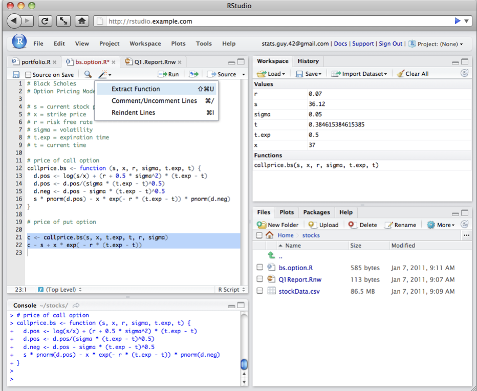

# Data manipulation, transformation and visualisation
library(tidyverse)
# Nice tables
library(kableExtra)
# Simple features (a standardised way to encode vector data ie. points, lines, polygons)
library(sf)
# Spatial objects conversion
library(sp)
# Thematic maps
library(tmap)
# Colour palettes
library(RColorBrewer)
# More colour palettes
library(viridis)3 Data Wrangling
This chapter1 introduces computational notebooks, basic functions and data types. These are all important concepts that we will use during the module.
If you are already familiar with R, R notebooks and data types, you may want to jump to Section Read Data and start from there. This section describes how to read and manipulate data using sf and tidyverse functions, including mutate(), %>% (known as pipe operator), select(), filter() and specific packages and functions how to manipulate spatial data.
The chapter is based on:
Grolemund and Wickham (2019), this book illustrates key libraries, including tidyverse, and functions for data manipulation in R
Xie, Allaire, and Grolemund (2019), excellent introduction to R markdown!
Williamson (2018), some examples from the first lecture of ENVS450 are used to explain the various types of random variables.
Lovelace, Nowosad, and Muenchow (2019), a really good book on handling spatial data and historical background of the evolution of R packages for spatial data analysis.
3.1 Dependencies
This tutorial uses the libraries below. Ensure they are installed on your machine2 before loading them executing the following code chunk:
3.2 Introducing R
R is a freely available language and environment for statistical computing and graphics which provides a wide variety of statistical and graphical techniques. It has gained widespread use in academia and industry. R offers a wider array of functionality than a traditional statistics package, such as SPSS and is composed of core (base) functionality, and is expandable through libraries hosted on CRAN. CRAN is a network of ftp and web servers around the world that store identical, up-to-date, versions of code and documentation for R.
Commands are sent to R using either the terminal / command line or the R Console which is installed with R on either Windows or OS X. On Linux, there is no equivalent of the console, however, third party solutions exist. On your own machine, R can be installed from here.
Normally RStudio is used to implement R coding. RStudio is an integrated development environment (IDE) for R and provides a more user-friendly front-end to R than the front-end provided with R.
To run R or RStudio, just double click on the R or RStudio icon. Throughout this module, we will be using RStudio:

If you would like to know more about the various features of RStudio, watch this video
3.3 Setting the working directory
Before we start any analysis, ensure to set the path to the directory where we are working. We can easily do that with setwd(). Please replace in the following line the path to the folder where you have placed this file -and where the data folder lives.
#setwd('../data/sar.csv')
#setwd('.')Note: It is good practice to not include spaces when naming folders and files. Use underscores or dots.
You can check your current working directory by typing:
getwd()[1] "/Users/franciscorowe/Dropbox/Francisco/uol/teaching/envs453/202223/san"3.4 R Scripts and Computational Notebooks
An R script is a series of commands that you can execute at one time and help you save time. So you do not repeat the same steps every time you want to execute the same process with different datasets. An R script is just a plain text file with R commands in it.
To create an R script in RStudio, you need to
Open a new script file: File > New File > R Script
Write some code on your new script window by typing eg.
mtcarsRun the script. Click anywhere on the line of code, then hit Ctrl + Enter (Windows) or Cmd + Enter (Mac) to run the command or select the code chunk and click run on the right-top corner of your script window. If do that, you should get:
mtcars mpg cyl disp hp drat wt qsec vs am gear carb
Mazda RX4 21.0 6 160.0 110 3.90 2.620 16.46 0 1 4 4
Mazda RX4 Wag 21.0 6 160.0 110 3.90 2.875 17.02 0 1 4 4
Datsun 710 22.8 4 108.0 93 3.85 2.320 18.61 1 1 4 1
Hornet 4 Drive 21.4 6 258.0 110 3.08 3.215 19.44 1 0 3 1
Hornet Sportabout 18.7 8 360.0 175 3.15 3.440 17.02 0 0 3 2
Valiant 18.1 6 225.0 105 2.76 3.460 20.22 1 0 3 1
Duster 360 14.3 8 360.0 245 3.21 3.570 15.84 0 0 3 4
Merc 240D 24.4 4 146.7 62 3.69 3.190 20.00 1 0 4 2
Merc 230 22.8 4 140.8 95 3.92 3.150 22.90 1 0 4 2
Merc 280 19.2 6 167.6 123 3.92 3.440 18.30 1 0 4 4
Merc 280C 17.8 6 167.6 123 3.92 3.440 18.90 1 0 4 4
Merc 450SE 16.4 8 275.8 180 3.07 4.070 17.40 0 0 3 3
Merc 450SL 17.3 8 275.8 180 3.07 3.730 17.60 0 0 3 3
Merc 450SLC 15.2 8 275.8 180 3.07 3.780 18.00 0 0 3 3
Cadillac Fleetwood 10.4 8 472.0 205 2.93 5.250 17.98 0 0 3 4
Lincoln Continental 10.4 8 460.0 215 3.00 5.424 17.82 0 0 3 4
Chrysler Imperial 14.7 8 440.0 230 3.23 5.345 17.42 0 0 3 4
Fiat 128 32.4 4 78.7 66 4.08 2.200 19.47 1 1 4 1
Honda Civic 30.4 4 75.7 52 4.93 1.615 18.52 1 1 4 2
Toyota Corolla 33.9 4 71.1 65 4.22 1.835 19.90 1 1 4 1
Toyota Corona 21.5 4 120.1 97 3.70 2.465 20.01 1 0 3 1
Dodge Challenger 15.5 8 318.0 150 2.76 3.520 16.87 0 0 3 2
AMC Javelin 15.2 8 304.0 150 3.15 3.435 17.30 0 0 3 2
Camaro Z28 13.3 8 350.0 245 3.73 3.840 15.41 0 0 3 4
Pontiac Firebird 19.2 8 400.0 175 3.08 3.845 17.05 0 0 3 2
Fiat X1-9 27.3 4 79.0 66 4.08 1.935 18.90 1 1 4 1
Porsche 914-2 26.0 4 120.3 91 4.43 2.140 16.70 0 1 5 2
Lotus Europa 30.4 4 95.1 113 3.77 1.513 16.90 1 1 5 2
Ford Pantera L 15.8 8 351.0 264 4.22 3.170 14.50 0 1 5 4
Ferrari Dino 19.7 6 145.0 175 3.62 2.770 15.50 0 1 5 6
Maserati Bora 15.0 8 301.0 335 3.54 3.570 14.60 0 1 5 8
Volvo 142E 21.4 4 121.0 109 4.11 2.780 18.60 1 1 4 2- Save the script: File > Save As, select your required destination folder, and enter any filename that you like, provided that it ends with the file extension .R
An R Notebook is an R Markdown document with descriptive text and code chunks that can be executed independently and interactively, with output visible immediately beneath a code chunk - see Xie, Allaire, and Grolemund (2019).
To create an R Notebook, you need to:
- Open a new script file: File > New File > R Notebook

- Insert code chunks, either:
- use the Insert command on the editor toolbar;
- use the keyboard shortcut Ctrl + Alt + I or Cmd + Option + I (Mac); or,
- type the chunk delimiters
```{r}and```
In a chunk code you can produce text output, tables, graphics and write code! You can control these outputs via chunk options which are provided inside the curly brackets eg.

Execute code: hit “Run Current Chunk”, Ctrl + Shift + Enter or Cmd + Shift + Enter (Mac)
Save an R notebook: File > Save As. A notebook has a
*.Rmdextension and when it is saved a*.nb.htmlfile is automatically created. The latter is a self-contained HTML file which contains both a rendered copy of the notebook with all current chunk outputs and a copy of the *.Rmd file itself.
Rstudio also offers a Preview option on the toolbar which can be used to create pdf, html and word versions of the notebook. To do this, choose from the drop-down list menu knit to ...
For this module, we will be using computational notebooks through Quarto; that is, Quarto Document. “Quarto is a multi-language, next generation version of R Markdown from RStudio, with many new new features and capabilities. Like R Markdown, Quarto uses Knitr to execute R code, and is therefore able to render most existing Rmd files without modification.”
To create a Quarto Document, you need to:
- Open a new script file: File > New File > Quarto Document
Quarto Documents work in the same way as R Notebooks with small variations. You find a comprehensive guide on the Quarto website.
3.5 Getting Help
You can use help or ? to ask for details for a specific function:
help(sqrt) #or ?sqrtAnd using example provides examples for said function:
example(sqrt)
sqrt> require(stats) # for spline
sqrt> require(graphics)
sqrt> xx <- -9:9
sqrt> plot(xx, sqrt(abs(xx)), col = "red")
sqrt> lines(spline(xx, sqrt(abs(xx)), n=101), col = "pink")3.6 Variables and objects
An object is a data structure having attributes and methods. In fact, everything in R is an object!
A variable is a type of data object. Data objects also include list, vector, matrices and text.
- Creating a data object
In R a variable can be created by using the symbol <- to assign a value to a variable name. The variable name is entered on the left <- and the value on the right. Note: Data objects can be given any name, provided that they start with a letter of the alphabet, and include only letters of the alphabet, numbers and the characters . and _. Hence AgeGroup, Age_Group and Age.Group are all valid names for an R data object. Note also that R is case-sensitive, to agegroup and AgeGroup would be treated as different data objects.
To save the value 28 to a variable (data object) labelled age, run the code:
age <- 28- Inspecting a data object
To inspect the contents of the data object age run the following line of code:
age[1] 28Find out what kind (class) of data object age is using:
class(age) [1] "numeric"Inspect the structure of the age data object:
str(age) num 28- The vector data object
What if we have more than one response? We can use the c( ) function to combine multiple values into one data vector object:
age <- c(28, 36, 25, 24, 32)
age[1] 28 36 25 24 32class(age) #Still numeric..[1] "numeric"str(age) #..but now a vector (set) of 5 separate values num [1:5] 28 36 25 24 32Note that on each line in the code above any text following the # character is ignored by R when executing the code. Instead, text following a # can be used to add comments to the code to make clear what the code is doing. Two marks of good code are a clear layout and clear commentary on the code.
3.6.1 Basic Data Types
There are a number of data types. Four are the most common. In R, numeric is the default type for numbers. It stores all numbers as floating-point numbers (numbers with decimals). This is because most statistical calculations deal with numbers with up to two decimals.
- Numeric
num <- 4.5 # Decimal values
class(num)[1] "numeric"- Integer
int <- as.integer(4) # Natural numbers. Note integers are also numerics.
class(int)[1] "integer"- Character
cha <- "are you enjoying this?" # text or string. You can also type `as.character("are you enjoying this?")`
class(cha)[1] "character"- Logical
log <- 2 < 1 # assigns TRUE or FALSE. In this case, FALSE as 2 is greater than 1
log[1] FALSEclass(log)[1] "logical"3.6.2 Random Variables
In statistics, we differentiate between data to capture:
Qualitative attributes categorise objects eg.gender, marital status. To measure these attributes, we use Categorical data which can be divided into:
- Nominal data in categories that have no inherent order eg. gender
- Ordinal data in categories that have an inherent order eg. income bands
Quantitative attributes:
- Discrete data: count objects of a certain category eg. number of kids, cars
- Continuous data: precise numeric measures eg. weight, income, length.
In R these three types of random variables are represented by the following types of R data object:
| variables | objects |
|---|---|
| nominal | factor |
| ordinal | ordered factor |
| discrete | numeric |
| continuous | numeric |
Survey and R data types
We have already encountered the R data type numeric. The next section introduces the factor data type.
3.6.2.1 Factor
What is a factor?
A factor variable assigns a numeric code to each possible category (level) in a variable. Behind the scenes, R stores the variable using these numeric codes to save space and speed up computing. For example, compare the size of a list of 10,000 males and females to a list of 10,000 1s and 0s. At the same time R also saves the category names associated with each numeric code (level). These are used for display purposes.
For example, the variable gender, converted to a factor, would be stored as a series of 1s and 2s, where 1 = female and 2 = male; but would be displayed in all outputs using their category labels of female and male.
Creating a factor
To convert a numeric or character vector into a factor use the factor( ) function. For instance:
gender <- c("female","male","male","female","female") # create a gender variable
gender <- factor(gender) # replace character vector with a factor version
gender[1] female male male female female
Levels: female maleclass(gender)[1] "factor"str(gender) Factor w/ 2 levels "female","male": 1 2 2 1 1Now gender is a factor and is stored as a series of 1s and 2s, with 1s representing females and 2s representing males. The function levels( ) lists the levels (categories) associated with a given factor variable:
levels(gender)[1] "female" "male" The categories are reported in the order that they have been numbered (starting from 1). Hence from the output we can infer that females are coded as 1, and males as 2.
3.7 Data Frames
R stores different types of data using different types of data structure. Data are normally stored as a data.frame. A data frames contain one row per observation (e.g. wards) and one column per attribute (eg. population and health).
We create three variables wards, population (pop) and people with good health (ghealth). We use 2011 census data counts for total population and good health for wards in Liverpool.
wards <- c("Allerton and Hunts Cross","Anfield","Belle Vale","Central","Childwall","Church","Clubmoor","County","Cressington","Croxteth","Everton","Fazakerley","Greenbank","Kensington and Fairfield","Kirkdale","Knotty Ash","Mossley Hill","Norris Green","Old Swan","Picton","Princes Park","Riverside","St Michael's","Speke-Garston","Tuebrook and Stoneycroft","Warbreck","Wavertree","West Derby","Woolton","Yew Tree")
pop <- c(14853,14510,15004,20340,13908,13974,15272,14045,14503,
14561,14782,16786,16132,15377,16115,13312,13816,15047,
16461,17009,17104,18422,12991,20300,16489,16481,14772,
14382,12921,16746)
ghealth <- c(7274,6124,6129,11925,7219,7461,6403,5930,7094,6992,
5517,7879,8990,6495,6662,5981,7322,6529,7192,7953,
7636,9001,6450,8973,7302,7521,7268,7013,6025,7717)Note that pop and ghealth and wards contains characters.
3.7.1 Creating A Data Frame
We can create a data frame and examine its structure:
df <- data.frame(wards, pop, ghealth)
df # or use view(data) wards pop ghealth
1 Allerton and Hunts Cross 14853 7274
2 Anfield 14510 6124
3 Belle Vale 15004 6129
4 Central 20340 11925
5 Childwall 13908 7219
6 Church 13974 7461
7 Clubmoor 15272 6403
8 County 14045 5930
9 Cressington 14503 7094
10 Croxteth 14561 6992
11 Everton 14782 5517
12 Fazakerley 16786 7879
13 Greenbank 16132 8990
14 Kensington and Fairfield 15377 6495
15 Kirkdale 16115 6662
16 Knotty Ash 13312 5981
17 Mossley Hill 13816 7322
18 Norris Green 15047 6529
19 Old Swan 16461 7192
20 Picton 17009 7953
21 Princes Park 17104 7636
22 Riverside 18422 9001
23 St Michael's 12991 6450
24 Speke-Garston 20300 8973
25 Tuebrook and Stoneycroft 16489 7302
26 Warbreck 16481 7521
27 Wavertree 14772 7268
28 West Derby 14382 7013
29 Woolton 12921 6025
30 Yew Tree 16746 7717str(df) # or use glimpse(data) 'data.frame': 30 obs. of 3 variables:
$ wards : chr "Allerton and Hunts Cross" "Anfield" "Belle Vale" "Central" ...
$ pop : num 14853 14510 15004 20340 13908 ...
$ ghealth: num 7274 6124 6129 11925 7219 ...3.7.2 Referencing Data Frames
Throughout this module, you will need to refer to particular parts of a dataframe - perhaps a particular column (an area attribute); or a particular subset of respondents. Hence it is worth spending some time now mastering this particular skill.
The relevant R function, [ ], has the format [row,col] or, more generally, [set of rows, set of cols].
Run the following commands to get a feel of how to extract different slices of the data:
df # whole data.frame
df[1, 1] # contents of first row and column
df[2, 2:3] # contents of the second row, second and third columns
df[1, ] # first row, ALL columns [the default if no columns specified]
df[ ,1:2] # ALL rows; first and second columns
df[c(1,3,5), ] # rows 1,3,5; ALL columns
df[ , 2] # ALL rows; second column (by default results containing only
#one column are converted back into a vector)
df[ , 2, drop=FALSE] # ALL rows; second column (returned as a data.frame)In the above, note that we have used two other R functions:
1:3The colon operator tells R to produce a list of numbers including the named start and end points.c(1,3,5)Tells R to combine the contents within the brackets into one list of objects
Run both of these fuctions on their own to get a better understanding of what they do.
Three other methods for referencing the contents of a data.frame make direct use of the variable names within the data.frame, which tends to make for easier to read/understand code:
df[,"pop"] # variable name in quotes inside the square brackets
df$pop # variable name prefixed with $ and appended to the data.frame name
# or you can use attach
attach(df)
pop # but be careful if you already have an age variable in your local workspaceWant to check the variables available, use the names( ):
names(df)[1] "wards" "pop" "ghealth"3.8 Read Data
Ensure your memory is clear
rm(list=ls()) # rm for targeted deletion / ls for listing all existing objectsThere are many commands to read / load data onto R. The command to use will depend upon the format they have been saved. Normally they are saved in csv format from Excel or other software packages. So we use either:
df <- read.table("path/file_name.csv", header = FALSE, sep =",")df <- read("path/file_name.csv", header = FALSE)df <- read.csv2("path/file_name.csv", header = FALSE)
To read files in other formats, refer to this useful DataCamp tutorial
census <- read.csv("data/census/census_data.csv")
head(census) code ward pop16_74 higher_managerial pop ghealth
1 E05000886 Allerton and Hunts Cross 10930 1103 14853 7274
2 E05000887 Anfield 10712 312 14510 6124
3 E05000888 Belle Vale 10987 432 15004 6129
4 E05000889 Central 19174 1346 20340 11925
5 E05000890 Childwall 10410 1123 13908 7219
6 E05000891 Church 10569 1843 13974 7461# NOTE: always ensure your are setting the correct directory leading to the data.
# It may differ from your existing working directory3.8.1 Quickly inspect the data
What class?
What R data types?
What data types?
# 1
class(census)
# 2 & 3
str(census)Just interested in the variable names:
names(census)[1] "code" "ward" "pop16_74"
[4] "higher_managerial" "pop" "ghealth" or want to view the data:
View(census)
3.9 Manipulation Data
3.9.1 Adding New Variables
Usually you want to add / create new variables to your data frame using existing variables eg. computing percentages by dividing two variables. There are many ways in which you can do this i.e. referecing a data frame as we have done above, or using $ (e.g. census$pop). For this module, we’ll use tidyverse:
census <- census %>% mutate(per_ghealth = ghealth / pop)Note we used a pipe operator %>%, which helps make the code more efficient and readable - more details, see Grolemund and Wickham (2019). When using the pipe operator, recall to first indicate the data frame before %>%.
Note also the use a variable name before the = sign in brackets to indicate the name of the new variable after mutate.
3.9.2 Selecting Variables
Usually you want to select a subset of variables for your analysis as storing to large data sets in your R memory can reduce the processing speed of your machine. A selection of data can be achieved by using the select function:
ndf <- census %>% select(ward, pop16_74, per_ghealth)Again first indicate the data frame and then the variable you want to select to build a new data frame. Note the code chunk above has created a new data frame called ndf. Explore it.
3.9.3 Filtering Data
You may also want to filter values based on defined conditions. You may want to filter observations greater than a certain threshold or only areas within a certain region. For example, you may want to select areas with a percentage of good health population over 50%:
ndf2 <- census %>% filter(per_ghealth < 0.5)You can use more than one variables to set conditions. Use “,” to add a condition.
3.9.4 Joining Data Drames
When working with spatial data, we often need to join data. To this end, you need a common unique id variable. Let’s say, we want to add a data frame containing census data on households for Liverpool, and join the new attributes to one of the existing data frames in the workspace. First we will read the data frame we want to join (ie. census_data2.csv).
# read data
census2 <- read.csv("data/census/census_data2.csv")
# visualise data structure
str(census2)'data.frame': 30 obs. of 3 variables:
$ geo_code : chr "E05000886" "E05000887" "E05000888" "E05000889" ...
$ households : int 6359 6622 6622 7139 5391 5884 6576 6745 6317 6024 ...
$ socialrented_households: int 827 1508 2818 1311 374 178 2859 1564 1023 1558 ...The variable geo_code in this data frame corresponds to the code in the existing data frame and they are unique so they can be automatically matched by using the merge() function. The merge() function uses two arguments: x and y. The former refers to data frame 1 and the latter to data frame 2. Both of these two data frames must have a id variable containing the same information. Note they can have different names. Another key argument to include is all.x=TRUE which tells the function to keep all the records in x, but only those in y that match in case there are discrepancies in the id variable.
# join data frames
join_dfs <- merge(census, census2, by.x="code", by.y="geo_code", all.x = TRUE)
# check data
head(join_dfs) code ward pop16_74 higher_managerial pop ghealth
1 E05000886 Allerton and Hunts Cross 10930 1103 14853 7274
2 E05000887 Anfield 10712 312 14510 6124
3 E05000888 Belle Vale 10987 432 15004 6129
4 E05000889 Central 19174 1346 20340 11925
5 E05000890 Childwall 10410 1123 13908 7219
6 E05000891 Church 10569 1843 13974 7461
per_ghealth households socialrented_households
1 0.4897327 6359 827
2 0.4220538 6622 1508
3 0.4084911 6622 2818
4 0.5862832 7139 1311
5 0.5190538 5391 374
6 0.5339201 5884 1783.9.5 Saving Data
It may also be convinient to save your R projects. They contains all the objects that you have created in your workspace by using the save.image( ) function:
save.image("week1_envs453.RData")This creates a file labelled “week1_envs453.RData” in your working directory. You can load this at a later stage using the load( ) function.
load("week1_envs453.RData")Alternatively you can save / export your data into a csv file. The first argument in the function is the object name, and the second: the name of the csv we want to create.
write.csv(join_dfs, "join_censusdfs.csv")3.10 Using Spatial Data Frames
A core area of this module is learning to work with spatial data in R. R has various purposedly designed packages for manipulation of spatial data and spatial analysis techniques. Various R packages exist in CRAN eg. spatial, sgeostat, splancs, maptools, tmap, rgdal, spand and more recent development of sf - see Lovelace, Nowosad, and Muenchow (2019) for a great description and historical context for some of these packages.
During this session, we will use sf.
We first need to import our spatial data. We will use a shapefile containing data at Output Area (OA) level for Liverpool. These data illustrates the hierarchical structure of spatial data.
3.10.1 Read Spatial Data
oa_shp <- st_read("data/census/Liverpool_OA.shp")Reading layer `Liverpool_OA' from data source
`/Users/franciscorowe/Dropbox/Francisco/uol/teaching/envs453/202223/san/data/census/Liverpool_OA.shp'
using driver `ESRI Shapefile'
Simple feature collection with 1584 features and 18 fields
Geometry type: MULTIPOLYGON
Dimension: XY
Bounding box: xmin: 332390.2 ymin: 379748.5 xmax: 345636 ymax: 397980.1
Projected CRS: Transverse_MercatorExamine the input data. A spatial data frame stores a range of attributes derived from a shapefile including the geometry of features (e.g. polygon shape and location), attributes for each feature (stored in the .dbf), projection and coordinates of the shapefile’s bounding box - for details, execute:
?st_readYou can employ the usual functions to visualise the content of the created data frame:
# visualise variable names
names(oa_shp) [1] "OA_CD" "LSOA_CD" "MSOA_CD" "LAD_CD" "pop" "H_Vbad"
[7] "H_bad" "H_fair" "H_good" "H_Vgood" "age_men" "age_med"
[13] "age_60" "S_Rent" "Ethnic" "illness" "unemp" "males"
[19] "geometry"# data structure
str(oa_shp)Classes 'sf' and 'data.frame': 1584 obs. of 19 variables:
$ OA_CD : chr "E00176737" "E00033515" "E00033141" "E00176757" ...
$ LSOA_CD : chr "E01033761" "E01006614" "E01006546" "E01006646" ...
$ MSOA_CD : chr "E02006932" "E02001358" "E02001365" "E02001369" ...
$ LAD_CD : chr "E08000012" "E08000012" "E08000012" "E08000012" ...
$ pop : int 185 281 208 200 321 187 395 320 316 214 ...
$ H_Vbad : int 1 2 3 7 4 4 5 9 5 4 ...
$ H_bad : int 2 20 10 8 10 25 19 22 25 17 ...
$ H_fair : int 9 47 22 17 32 70 42 53 55 39 ...
$ H_good : int 53 111 71 52 112 57 131 104 104 53 ...
$ H_Vgood : int 120 101 102 116 163 31 198 132 127 101 ...
$ age_men : num 27.9 37.7 37.1 33.7 34.2 ...
$ age_med : num 25 36 32 29 34 53 23 30 34 29 ...
$ age_60 : num 0.0108 0.1637 0.1971 0.1 0.1402 ...
$ S_Rent : num 0.0526 0.176 0.0235 0.2222 0.0222 ...
$ Ethnic : num 0.3514 0.0463 0.0192 0.215 0.0779 ...
$ illness : int 185 281 208 200 321 187 395 320 316 214 ...
$ unemp : num 0.0438 0.121 0.1121 0.036 0.0743 ...
$ males : int 122 128 95 120 158 123 207 164 157 94 ...
$ geometry:sfc_MULTIPOLYGON of length 1584; first list element: List of 1
..$ :List of 1
.. ..$ : num [1:14, 1:2] 335106 335130 335164 335173 335185 ...
..- attr(*, "class")= chr [1:3] "XY" "MULTIPOLYGON" "sfg"
- attr(*, "sf_column")= chr "geometry"
- attr(*, "agr")= Factor w/ 3 levels "constant","aggregate",..: NA NA NA NA NA NA NA NA NA NA ...
..- attr(*, "names")= chr [1:18] "OA_CD" "LSOA_CD" "MSOA_CD" "LAD_CD" ...# see first few observations
head(oa_shp)Simple feature collection with 6 features and 18 fields
Geometry type: MULTIPOLYGON
Dimension: XY
Bounding box: xmin: 335071.6 ymin: 389876.7 xmax: 339426.9 ymax: 394479
Projected CRS: Transverse_Mercator
OA_CD LSOA_CD MSOA_CD LAD_CD pop H_Vbad H_bad H_fair H_good
1 E00176737 E01033761 E02006932 E08000012 185 1 2 9 53
2 E00033515 E01006614 E02001358 E08000012 281 2 20 47 111
3 E00033141 E01006546 E02001365 E08000012 208 3 10 22 71
4 E00176757 E01006646 E02001369 E08000012 200 7 8 17 52
5 E00034050 E01006712 E02001375 E08000012 321 4 10 32 112
6 E00034280 E01006761 E02001366 E08000012 187 4 25 70 57
H_Vgood age_men age_med age_60 S_Rent Ethnic illness unemp
1 120 27.94054 25 0.01081081 0.05263158 0.35135135 185 0.04379562
2 101 37.71174 36 0.16370107 0.17600000 0.04626335 281 0.12101911
3 102 37.08173 32 0.19711538 0.02352941 0.01923077 208 0.11214953
4 116 33.73000 29 0.10000000 0.22222222 0.21500000 200 0.03597122
5 163 34.19003 34 0.14018692 0.02222222 0.07788162 321 0.07428571
6 31 56.09091 53 0.44919786 0.88524590 0.11764706 187 0.44615385
males geometry
1 122 MULTIPOLYGON (((335106.3 38...
2 128 MULTIPOLYGON (((335810.5 39...
3 95 MULTIPOLYGON (((336738 3931...
4 120 MULTIPOLYGON (((335914.5 39...
5 158 MULTIPOLYGON (((339325 3914...
6 123 MULTIPOLYGON (((338198.1 39...TASK:
- What are the geographical hierarchy in these data?
- What is the smallest geography?
- What is the largest geography?
3.10.2 Basic Mapping
Again, many functions exist in CRAN for creating maps:
plotto create static mapstmapto create static and interactive mapsleafletto create interactive mapsmapviewto create interactive mapsggplot2to create data visualisations, including static mapsshinyto create web applications, including maps
Here this notebook demonstrates the use of plot and tmap. First plot is used to map the spatial distribution of non-British-born population in Liverpool. First we only map the geometries on the right,
3.10.2.1 Using plot
# mapping geometry
plot(st_geometry(oa_shp))
and then:
# map attributes, adding intervals
plot(oa_shp["Ethnic"], key.pos = 4, axes = TRUE, key.width = lcm(1.3), key.length = 1.,
breaks = "jenks", lwd = 0.1, border = 'grey') TASK:
- What is the key pattern emerging from this map?
3.10.2.2 Using tmap
Similar to ggplot2, tmap is based on the idea of a ‘grammar of graphics’ which involves a separation between the input data and aesthetics (i.e. the way data are visualised). Each data set can be mapped in various different ways, including location as defined by its geometry, colour and other features. The basic building block is tm_shape() (which defines input data), followed by one or more layer elements such as tm_fill() and tm_dots().
# ensure geometry is valid
oa_shp = sf::st_make_valid(oa_shp)
# map
legend_title = expression("% ethnic pop.")
map_oa = tm_shape(oa_shp) +
tm_fill(col = "Ethnic", title = legend_title, palette = magma(256), style = "cont") + # add fill
tm_borders(col = "white", lwd = .01) + # add borders
tm_compass(type = "arrow", position = c("right", "top") , size = 4) + # add compass
tm_scale_bar(breaks = c(0,1,2), text.size = 0.5, position = c("center", "bottom")) # add scale bar
map_oaNote that the operation + is used to add new layers. You can set style themes by tm_style. To visualise the existing styles use tmap_style_catalogue(), and you can also evaluate the code chunk below if you would like to create an interactive map.
tmap_mode("view")
map_oaTASK:
- Try mapping other variables in the spatial data frame. Where do population aged 60 and over concentrate?
3.10.3 Comparing geographies
If you recall, one of the key issues of working with spatial data is the modifiable area unit problem (MAUP) - see lecture notes. To get a sense of the effects of MAUP, we analyse differences in the spatial patterns of the ethnic population in Liverpool between Middle Layer Super Output Areas (MSOAs) and OAs. So we map these geographies together.
# read data at the msoa level
msoa_shp <- st_read("data/census/Liverpool_MSOA.shp")Reading layer `Liverpool_MSOA' from data source
`/Users/franciscorowe/Dropbox/Francisco/uol/teaching/envs453/202223/san/data/census/Liverpool_MSOA.shp'
using driver `ESRI Shapefile'
Simple feature collection with 61 features and 16 fields
Geometry type: MULTIPOLYGON
Dimension: XY
Bounding box: xmin: 333086.1 ymin: 381426.3 xmax: 345636 ymax: 397980.1
Projected CRS: Transverse_Mercator# ensure geometry is valid
msoa_shp = sf::st_make_valid(msoa_shp)
# create a map
map_msoa = tm_shape(msoa_shp) +
tm_fill(col = "Ethnic", title = legend_title, palette = magma(256), style = "cont") +
tm_borders(col = "white", lwd = .01) +
tm_compass(type = "arrow", position = c("right", "top") , size = 4) +
tm_scale_bar(breaks = c(0,1,2), text.size = 0.5, position = c("center", "bottom"))
# arrange maps
tmap_arrange(map_msoa, map_oa) 
TASK:
- What differences do you see between OAs and MSOAs?
- Can you identify areas of spatial clustering? Where are they?
3.11 Useful Functions
| Function | Description |
|---|---|
| read.csv() | read csv files into data frames |
| str() | inspect data structure |
| mutate() | create a new variable |
| filter() | filter observations based on variable values |
| %>% | pipe operator - chain operations |
| select() | select variables |
| merge() | join dat frames |
| st_read | read spatial data (ie. shapefiles) |
| plot() | create a map based a spatial data set |
| tm_shape(), tm_fill(), tm_borders() | create a map using tmap functions |
| tm_arrange | display multiple maps in a single “metaplot” |
This chapter is part of Spatial Analysis Notes

Introduction – R Notebooks + Basic Functions + Data Types by Francisco Rowe is licensed under a Creative Commons Attribution-NonCommercial-ShareAlike 4.0 International License.↩︎You can install package
mypackageby running the commandinstall.packages("mypackage")on the R prompt or through theTools --> Install Packages...menu in RStudio.↩︎